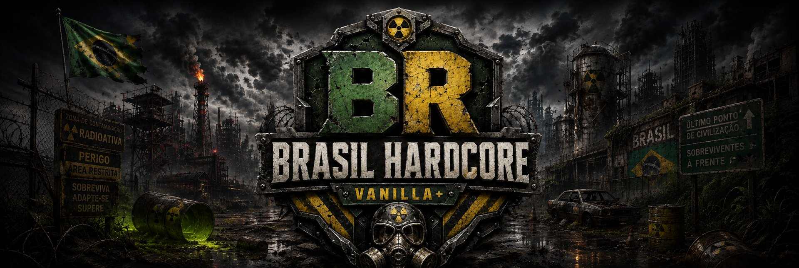

MAPA 01DAYZ / PS
Chernarus
Do litoral às florestas do interior, cidades e estradas conectam os pontos de encontro e as rotas de sobrevivência.
RAID POR DESTRUIÇÃOSábado 19h–22h
Comunidade brasileira / PlayStation
Somos o Brasil Hardcore, uma comunidade de DayZ no PlayStation. Jogue solo ou em clã, construa sua base e dispute território em dois mapas, com regras de RAID e suporte em português.

01 / Os servidores
Você pode jogar nos dois. Cada mapa tem seus próprios canais e seu dia de RAID por destruição.
Do litoral às florestas do interior, cidades e estradas conectam os pontos de encontro e as rotas de sobrevivência.
O deserto muda a leitura do terreno. Combine pontos de encontro com seu grupo antes de atravessar áreas abertas.
Horários de Brasília. RAID por falha tem uma janela diferente. Ver regras de RAID e defesa →
02 / A comunidade
O jogo acontece no mapa. No Discord, você encontra seu grupo, consulta os guias e conversa com a equipe.
Encontre um clã do seu mapa ou cadastre o seu. A central reúne as siglas, lideranças e membros dos grupos.
Abrir a central no Discord ↗Use Hardcoins do jogo na loja DayZ++ do seu mapa. Há radar de base, uniforme de clã, veículo de locação e prioridade de fila. Depois da compra, abra um ticket para combinar a entrega.
Consultar os guias do jogador ↗Precisa de ajuda ou quer relatar uma ocorrência? Informe sua PSN, o mapa e o que aconteceu. Envie os clipes no ticket, não em canal público.
Abrir suporte no Discord ↗03 / Primeiros passos
Confira conduta, construção, RAID e comandos proibidos. O regulamento está disponível neste site em três idiomas.
Ler as regras de DayZ →No Discord da comunidade, selecione Chernarus, Nasdara ou os dois para ver os canais correspondentes.
Escolher mapa no Discord ↗Siga o guia de vinculação no mapa escolhido. Use o seu ID online da PlayStation, nunca sua senha.
Ver o guia de PSN ↗Ponto de encontro
Entre pelo convite oficial para liberar os canais do seu mapa. Você não precisa de login para ler as regras neste site.